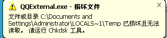

Conversation with 81184027 at Sun 16 Mar 2014 07:31:19 PM CST on 154115835 (webqq)
(03/16/2014 06:33:05 PM) 河北-邯郸&格调: 政府不怎么管，只会助长邪教的士气
(07:34:01 PM) 阿萨汗蛋包飯: 弗5：8从前你们是暗昧的，但如今在主里面是光明的，行事为人就当像光明的子女。
(07:34:20 PM) 阿萨汗蛋包飯: http://www.sara.gov.cn/
国家宗教局网站
(07:35:55 PM) 光: ((03/16/2014 06:33:05 PM) 河北-邯郸&格调: 政府不怎么管，只会助长邪教的士气 //07:34:42 PM) 河北-邯郸&格调: 当官的就应该学会敷衍了事！那叫本事 //自问自答？
(07:40:45 PM) 光: 人生就是一團慾望。當慾望得不到滿足便痛苦，當慾望得到滿足便無聊，人生就像鐘擺一樣在痛苦與無聊之間搖擺。 @叔本华
(07:45:55 PM) 阿萨汗蛋包飯: 叔本华唯心主义
(07:46:10 PM) 阿萨汗蛋包飯: 所有宗教都是客观唯心主义哲学
(07:49:17 PM) 幸福人生: 多找些人
(07:49:46 PM) 阿萨汗蛋包飯: http://www.gongyue.org/contact
(07:49:59 PM) 阿萨汗蛋包飯:
(07:52:09 PM) 光: 嗯
(07:52:10 PM) 光: 不错
(07:53:00 PM) 阿萨汗蛋包飯: ‘原来国家宗教局不受理全能神行政许可，
(07:53:14 PM) 阿萨汗蛋包飯: 性质上属于邪教
(07:56:56 PM) 幸福人生: 哦
(07:57:15 PM) 逝去的童年: 求帮
(07:57:47 PM) 光: 删除直接
(07:57:49 PM) 光: 呵呵
(07:58:02 PM) 幸福人生: 为什么国家不管
(07:58:20 PM) 逝去的童年: ....
(07:58:29 PM) 光: 应该没有不管吧
(07:58:25 PM) 逝去的童年: 无语
(07:58:51 PM) 光: 习上台之后还是打击了的
(07:58:48 PM) 逝去的童年: 这个关系到电脑能不能玩游戏的事情
(07:58:52 PM) 逝去的童年: 
(07:59:11 PM) 逝去的童年: 求帮
(07:59:14 PM) 幸福人生: 国家在等时候
(07:59:34 PM) 光: 每个国家的情况不同
(07:59:53 PM) 光: 我们国家处理这个问题，可能有他自己的思路
(07:59:55 PM) 幸福人生: 哦
(08:00:00 PM) 福建-福州&水浒: 中国特设
(08:00:01 PM) 逝去的童年: 大哥
(08:00:10 PM) 光: 嗯
(08:00:13 PM) 阿萨汗蛋包飯: 中国特色社会主义宗教
(08:00:17 PM) 逝去的童年: 每个国家从性质上根本产出不了
(08:00:20 PM) 逝去的童年: 铲除
(08:00:23 PM) 逝去的童年: 否则
(08:00:24 PM) 福建-福州&水浒:
(08:00:43 PM) 逝去的童年: 就成了迷信的千古罪人
(08:00:49 PM) 逝去的童年: 会引起公愤的
(08:00:58 PM) 福建-福州&水浒: 国家对宗教管理跟中国足球一样
(08:01:01 PM) 逝去的童年: 好了
(08:01:09 PM) 光: 嗯
(08:01:06 PM) 福建-福州&水浒: 外行人管理
(08:01:07 PM) 逝去的童年: 我帮你们解答了
(08:01:11 PM) 逝去的童年: 赶紧帮我把
(08:01:16 PM) 阿萨汗蛋包飯: 国家消亡之后，宗教仍然有可能继续存在。马克思主义主张让宗教自然消亡，反对用行政手段人为地消灭宗教
(08:01:35 PM) 光: (08:01:11 PM) 逝去的童年: 赶紧帮我把 //不玩游戏了
(08:01:40 PM) 光: 或者重装系统
(08:01:41 PM) 光: 呵呵
(08:02:04 PM) 逝去的童年: 我鄙视你
(08:02:05 PM) 福建-福州&水浒: 重新装吧
(08:02:16 PM) 逝去的童年: 重装
(08:02:18 PM) 逝去的童年: 额
(08:02:27 PM) 逝去的童年: 你想看一下我的游戏么？
(08:02:36 PM) 光: (08:02:16 PM) 逝去的童年: 重装 //我在linux下
(08:02:43 PM) 光: 用win很少
(08:02:49 PM) 光: 要用也是装虚拟机
(08:02:47 PM) 逝去的童年:
(08:03:18 PM) 福建-福州&水浒:
(08:03:30 PM) 福建-福州&水浒: 都是游戏
(08:04:11 PM) 光: 我换linux就是戒我的游戏瘾
(08:04:19 PM) 光: 可以有一些时间看书
(08:04:39 PM) 福建-福州&水浒: :thumbsup:
(08:04:48 PM) 光: ：）
(08:04:54 PM) 光: 以前我和他差不多
(08:05:03 PM) 光: 各种游戏
(08:04:58 PM) 福建-福州&水浒: 谁都年轻过
(08:05:06 PM) 光: 嗯
(08:05:17 PM) 福建-福州&水浒: 我玩游戏年龄在21左右
(08:05:30 PM) 光: 后来书到用时方恨少
(08:05:32 PM) 福建-福州&水浒: 现在基本不玩了
(08:05:44 PM) 光: 然后拼命读书
(08:05:46 PM) 光: 恶补
(08:05:55 PM) 福建-福州&水浒: 嗯
(08:06:03 PM) 光: 嗯
(08:06:19 PM) 逝去的童年: ....
(08:06:31 PM) 光: :face14:
(08:06:37 PM) 逝去的童年: 英雄杀
(08:06:46 PM) 逝去的童年: 4缺一
(08:06:51 PM) 逝去的童年: 来么
(08:07:09 PM) 光: 不了
(08:07:07 PM) 福建-福州&水浒: 不会玩
(08:07:25 PM) 光: 你能玩了？
(08:07:43 PM) 逝去的童年: 哪个还能玩
(08:11:07 PM) 光: 嗯
(08:15:22 PM) 幸福人生: :Z
(10:06:04 PM) 玉: 欢迎打假者转:share:
打假应该先打李彦宏!!@@
搜索一下，发现百度现在真是把"有钱能使鬼推磨"这话展现得彻底!!百度百科里的资讯，害人不浅的毒品也给宣传!!.:@网上居然连毒品都卖
(10:27:14 PM) 光: 其实是犯罪分子比普通人更会利用网络
(10:27:30 PM) 光: 技术是中性的，做好做坏看人
(10:44:48 PM) The account has disconnected and you are no longer in this chat. You will automatically rejoin the chat when the account reconnects.